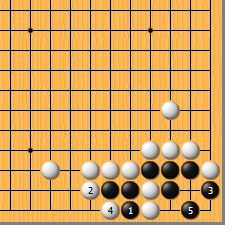
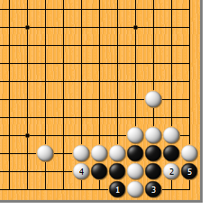
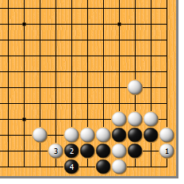
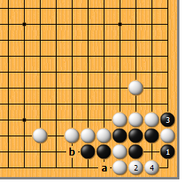
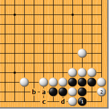
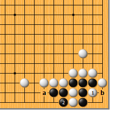
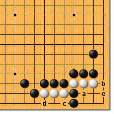

|  |  | |
| 图1 头疼了吧？黑1挡，是冷静的好手。看上去像要吃白二子，然而白2紧气时，黑却转身于3位挡。白只好4位提，黑5做眼，角里活了。 | 图2 黑1挡时，白如2位打，黑冷静地于3位提即可。接下来，4位和5位是见合，黑左右总有一眼。
| |
|
 |
 | |
图3 前图的白2如于本图1位长，黑2爬、4立，边上又成一眼。黑紧白一气的好处在这里仍然有用。
| 图4 黑如直接于1位打，白2先手打，俟黑3提时，再于4位长入，黑不行。正解图中黑a、白b的交换，就是利用弃子防白2位的先手打。 | |
|
 |
 | |
图5 黑1于角里挡也不行。白2长进，角里显然无眼。而后，黑a爬，白b挡，黑c立时白d拐，黑一看就不行。 | 图6 但是，白也不可随手于1位打。黑2提，反而产生了a、b见合的手段，黑净活。
| |
|  | 您的高见 | |
图7 此为《官子谱》中的原图。正确的次序是：白a、黑b、白c、黑d、白e。原题着数要多一些。 |